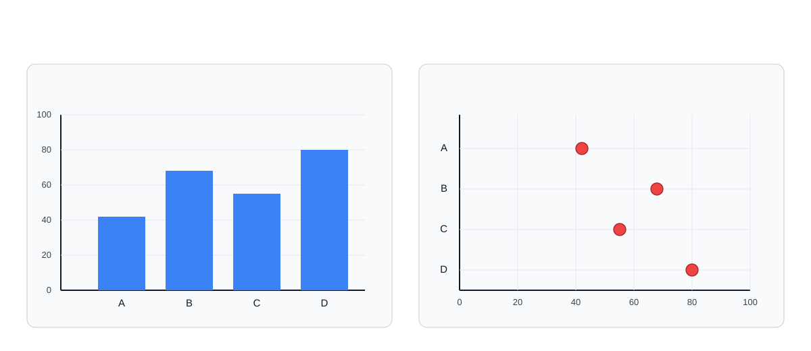
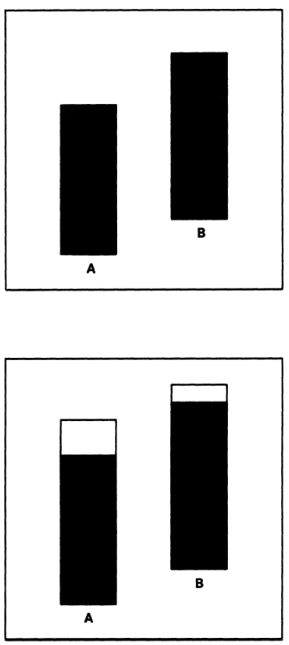
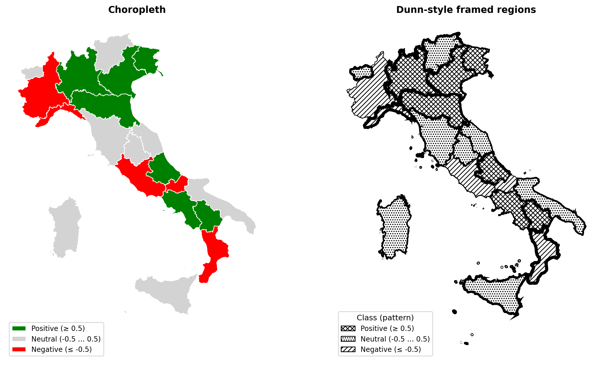
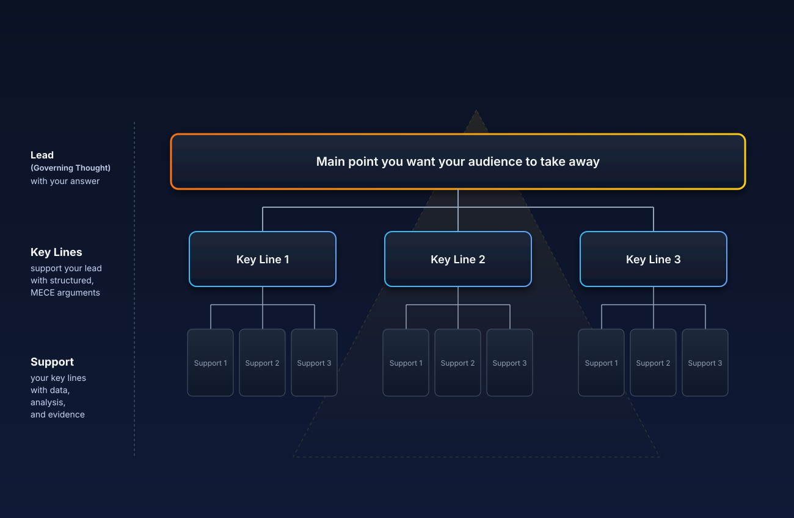
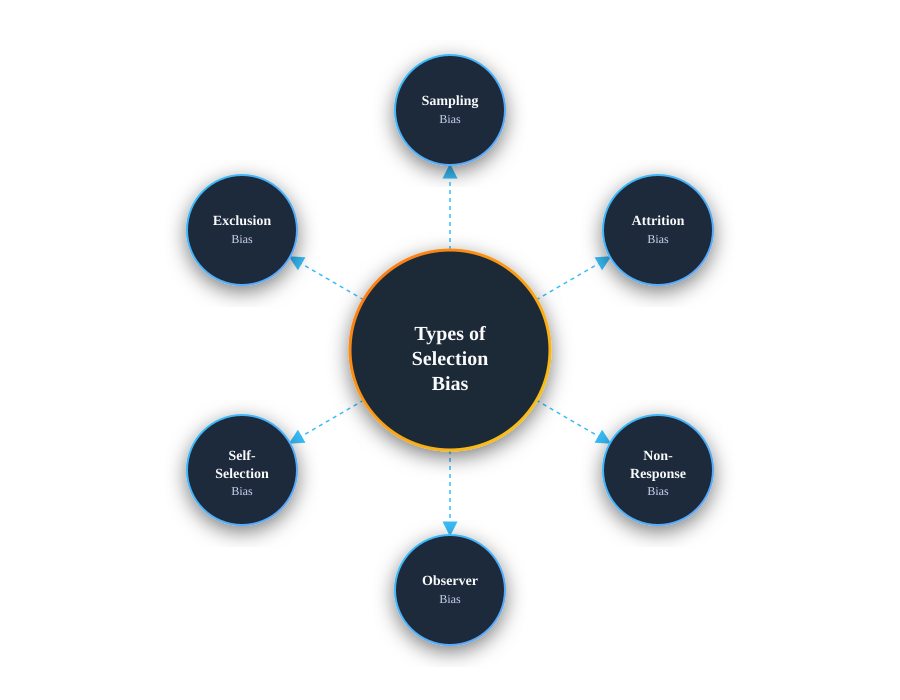

Data Storytelling

In questo articolo ho voluto approfondire alcuni principi che stanno alla base della data visualization e del modo di comunicare i dati.
Notebook della masterclass
Per chi vuole ho creato dei notebook con spiegazione del codice e output:
Introduzione
Nell'attuale panorama aziendale, caratterizzato da un'ipertrofia di dati (si parla di Big Data da anni ormai), le organizzazioni si trovano a fronteggiare un problema:
L'aumento esponenziale della disponibilità di informazioni non si traduce linearmente in una migliore qualità decisionale.
Al contrario però, spesso questo genera una paralisi analitica. Questo fenomeno non è imputabile all'assenza di tecnologie di estrazione o elaborazione dei dati, ambiti in cui Data Engineering e Data Science hanno fatto passi da gigante negli ultimi anni, ma risiede di più nella comunicazione e il reporting.
Il Data Storytelling, lungi dall'essere un mero esercizio estetico o una "soft skill" accessoria per abbellire presentazioni, rappresenta oggi un problema operativo importante tanto quanto la capacità di fare delle analisi solide. È, a tutti gli effetti, una disciplina di "ingegneria della decisione". Non hai idea del numero di volte che ho visto un progetto potenzialmente bellissimo raccontato male.
Quando il trasferimento di insight analitici dai team tecnici ai decisori strategici (C-Level, VP, Directors) fallisce, a pagarne le spese di solito è l'organizzazione in modo devastante. Gartner stima che la scarsa qualità dei dati costi alle organizzazioni medie circa 12,9 milioni di dollari all'anno in risorse sprecate e opportunità mancate. Questo concetto va dall'inzio (a come vengono raccolti e sistemati i dati) fino ad arrivare alla loro inefficace comunicazione e interpretazione. Se allarghiamo lo sguardo all'economia statunitense nel suo complesso, studi riportati dalla Harvard Business Review indicano che la miscomunicazione e i dati errati drenano fino a 3 trilioni di dollari annualmente.
Il report, la dashboard o il memo esecutivo non sono artefatti fini a se stessi ma costituiscono una sorta di UI (User interface) del processo decisionale.
Un'interfaccia scadente, che impone magari un carico mentale eccessivo o che nasconde le relazioni causali dietro alcune aggregazioni, rende nullo il ROI.
In un percorso di adozione pragmatica dell'Intelligenza Artificiale, la capacità di narrare il dato con rigore diventa ancora più cruciale: l'AI agisce come acceleratore di produzione di contenuti e analisi, ma senza un framework di controllo e comunicazione rigoroso, rischia di accelerare anche la diffusione di "allucinazioni statistiche e bias decisionali".
In questo articolo voglio provare a smantellare i miti del "Data Storytelling" come arte creativa, ridefinendolo attraverso protocolli derivati dalla psicologia cognitiva, dalla teoria della percezione grafica e dalle metodologie di management più rigorose (come il modello narrativo di Amazon o il principio della Piramide di McKinsey). L'obiettivo è fornire un articolo operativo per trasformare la fase di scrittura di report in modo efficace. Per farlo cercherò di usare un tono più formale del solito (per quanto possibile XD).
Teoria: Scienza della percezione
Il primo step per cambiare mindset è abbandonare l'intuizione soggettiva ("questo grafico mi piace") a favore di evidenze scientifiche su come il cervello umano processa le informazioni visive e testuali.
La teoria del carico cognitivo (Cognitive Load Theory)
La Cognitive Load Theory (CLT), sviluppata dallo psicologo John Sweller alla fine degli anni '80, fornisce la base teorica per comprendere perché la maggior parte delle dashboard aziendali fallisce.
La teoria postula che la memoria di lavoro umana abbia una capacità estremamente limitata di elaborare nuove informazioni simultaneamente. Quando un executive si trova di fronte a un report, il suo cervello deve gestire tre tipi di carico cognitivo, e l'obiettivo di chi disegna report deve essere l'ottimizzazione di questo bilanciamento. Con report intendo sia classici report che presentazioni, dashboard ecc.
Il primo tipo è il Carico cognitivo intrinseco (Intrinsic Load). Questo è determinato dalla complessità inerente dell'informazione stessa. Ad esempio, osservare una formula con integrali o leggi matematiche che governano il mercato richiedono uno sforzo mentale ineliminabile, legato alla difficoltà del concetto. Questo carico è necessario e non può essere eliminato senza banalizzare il contenuto.
Il secondo, e più insidioso, è il Carico cognitivo estraneo (Extraneous Load). Questo carico è generato dal modo in cui l'informazione è presentata. Ogni elemento visivo che non contribuisce direttamente alla comprensione del dato. Alcuni esempi sono griglie pesanti, effetti 3D, legende separate dal grafico, colori non codificati semanticamente, testo ridondante. Tutto questo costringe il cervello a sprecare risorse preziose per decodificare l'interfaccia piuttosto che il messaggio. Quello che ho notato dalla mia (breve) esperienza e ascoltando le persone a cui ho fatto consulenza, nel reporting aziendale, il carico estraneo è il nemico numero uno! Infatti questo potenzialmente può trasformare l'analisi in rumore. Una dashboard mal progettata, che costringe l'occhio a fare "ping-pong" tra una legenda e le barre di un grafico, aumenta il carico estraneo al punto da saturare la memoria di lavoro, impedendo l'apprendimento o la decisione. A tal riguardo vi lascio il link ad un articolo su Medium.
Infine, vi è il Carico cognitivo Germano (Germane Load). Questo si riferisce allo sforzo necessario per trasferire le informazioni a breve termine alla conoscenza e alla comprensione a lungo termine tramite schemi.
"A differenza del carico cognitivo intrinseco ed estraneo, il carico cognitivo germanico non costituisce una fonte indipendente di carico cognitivo. Si riferisce semplicemente alle risorse di memoria di lavoro disponibili per affrontare l'interattività degli elementi associati al carico cognitivo intrinseco". (Sweller, p. 126)
Come tale, il carico cognitivo germanico coinvolgerebbe le attività di apprendimento e i processi mentali che tentano di collegare le informazioni agli schemi di conoscenza a lungo termine in modo costruttivo, usando strumenti come l'utilizzo di dispositivi mnemonici, l'attivazione di conoscenze precedenti, ecc.
Sostanzialmente è il "carico buono", quello che porta all'insight e all'azione.
L'obiettivo del Data Storytelling è minimizzare il carico estraneo per liberare risorse cognitive da dedicare al carico germano, permettendo al decisore di assimilare meglio i dati e comprendere non solo cosa sta succedendo, ma perché e come intervenire.
| Tipo di Carico Cognitivo | Definizione Operativa nel Reporting | Esempio di Errore (Bad Practice) | Obiettivo di Design |
|---|---|---|---|
| Intrinseco | Complessità inerente ai dati e al problema (es. calcolo EBITDA). | Semplificare eccessivamente omettendo variabili causali necessarie. | Gestire attraverso segmentazione logica (Pyramid Principle). |
| Estraneo | Sforzo inutile causato da design povero o "chartjunk". | Grafici 3D, doppi assi $Y$, legende dislocate, decorazioni inutili. | Minimizzare drasticamente (Data-Ink Ratio). |
| Germano | Sforzo produttivo per creare modelli mentali e decisioni. | Manca la sintesi o la raccomandazione ("So What?"). | Massimizzare fornendo contesto e narrazione chiara. |
Gerarchia della percezione grafica
Se la CLT ci dice quanto il cervello può processare, gli studi di William Cleveland e Robert McGill (1984) ci dicono come il cervello decodifica le informazioni visive con maggiore o minore accuratezza. La loro ricerca ha stabilito una gerarchia fondamentale dei compiti percettivi, ordinati dal più accurato al meno accurato.
Al vertice della gerarchia troviamo la posizione su una scala comune. Il cervello umano è straordinariamente abile nel confrontare la posizione di punti o barre allineati su un singolo asse (come in un bar chart o un dot plot). Questo compito percettivo permette di distinguere differenze minime con grande accuratezza. Nel loro articolo sostengono che un compito percettivo è considerato più accurato se porta a giudizi umani più vicini alle quantità reali codificate. Gli esperimenti condotti confermano che i giudizi basati sulla posizione sono significativamente più accurati rispetto a quelli basati sulla lunghezza o sull'angolo.

Figura 01: Barplot (sinistra) e dotplot (destra): due rappresentazioni diverse dello stesso compito percettivo, la posizione su una scala comune.
Segue, con un leggero degrado dell'accuratezza, la Posizione su scale non allineate (Positions along nonaligned scales). Questo compito si verifica quando si confrontano valori rappresentati su scale identiche ma spazialmente separate, ad esempio nei small multiples o in pannelli grafici affiancati (juxtaposed graphs), dove ogni pannello mantiene la propria scala.
Il motivo per cui questa codifica resta più affidabile della semplice lunghezza è che la presenza della scala, anche se non condivisa fisicamente sullo stesso asse, offre all'occhio ulteriori visual cues di riferimento. In pratica, non stiamo stimando soltanto “quanto è lunga una barra”, ma “dove cade un valore” rispetto a un contesto visivo strutturato.
Un esempio classico è quello dei rettangoli incorniciati: se confronti due barre isolate, il compito percettivo è la stima della lunghezza (meno precisa); se invece inserisci le stesse barre in una cornice di riferimento, il giudizio si sposta sulla posizione dell'estremità della barra rispetto al bordo superiore della cornice, quindi su una scala non allineata.
Qui entra in gioco anche la Legge di Weber: la cornice crea una porzione “vuota” sopra la parte piena. Quando due barre sono simili, la differenza relativa tra le porzioni vuote può risultare più ampia e quindi più facile da cogliere rispetto alla differenza tra le porzioni piene. In sintesi, anche senza un asse condiviso, un riferimento visivo coerente migliora in modo netto la precisione del confronto.

Figura 02: Confronto tra barre semplici (in alto) e barre incorniciate (in basso): la cornice introduce un riferimento che rafforza il giudizio percettivo.
Scendendo nella gerarchia, troviamo la Lunghezza, la Direzione e l'Angolo. La lunghezza occupa il terzo livello (a pari merito con direzione e angolo), subito dopo la posizione su scale non allineate. Sembra un compito naturale, ma i risultati sperimentali di Cleveland e McGill mostrano chiaramente che è meno affidabile della posizione.
Le evidenze quantitative sono nette:
- gli errori medi nei giudizi di lunghezza risultano circa dal 40% al 250% più alti rispetto ai giudizi di posizione;
- il 78% dei grandi errori osservati negli esperimenti ricade nei compiti basati sulla lunghezza;
Nonostante questo, la lunghezza resta comunque preferibile ad area e volume. In termini psicofisici (Legge di Stevens, $p = k a^{\beta}$), la lunghezza ha un esponente $\beta$ vicino a 1: la percezione è quindi quasi lineare e molto meno distorta rispetto a codifiche areali o volumetriche, dove la sottostima è più marcata.
Dal punto di vista del design, i casi più problematici sono:
- Divided bar charts (barre impilate): solo il segmento alla base beneficia di una scala comune; i segmenti superiori richiedono confronti di lunghezza e diventano rapidamente difficili da confrontare tra categorie diverse.
- Curve-difference charts: quando due serie sono rappresentate come linee, il lettore dovrebbe stimare la distanza verticale tra curve (lunghezza), ma l'occhio tende a inseguire la distanza minima locale tra i tracciati, introducendo errori anche grossolani; in pratica, è un compito percettivo quasi impossibile da svolgere con precisione.
Questo spiega perché, come visto con i rettangoli incorniciati, la posizione su scale non allineate rende meglio che la lunghezza: quando introduci un riferimento visivo stabile, il confronto percettivo diventa più robusto. Operativamente, quando possibile conviene sostituire codifiche basate sulla lunghezza (es. molte barre impilate) con grafici che privilegiano la posizione, come i dot chart.
Per angolo e direzione il quadro è più sottile: non sono compiti equivalenti, anche se condividono lo stesso livello della gerarchia.
Angolo (e problema dei pie chart).
I grafici a torta richiedono soprattutto giudizi angolari, ed è qui che emergono i limiti maggiori. Nel Position-Angle experiment, i giudizi basati sulla posizione risultano quasi due volte più accurati (fattore ~1,96) rispetto a quelli basati sull'angolo; inoltre, l'88% dei grandi errori osservati proviene proprio dai compiti angolari. Qui compare un bias sistematico di sottostima, soprattutto nella fascia 25%-50%. La conseguenza operativa che quando l'obiettivo è il confronto quantitativo, conviene sostituire il pie chart con bar chart o, meglio ancora, dot chart.Direzione (slope/pendenza).
Nei grafici cartesiani, la direzione è invece utile per riconoscere rapidamente pattern (linearità, non linearità, cambi di regime). Se gli stessi dati vengono ripresentati eliminando l'indizio di pendenza, la lettura della struttura complessiva diventa molto più faticosa. Detto questo, stimare con precisione un valore di pendenza resta meno accurato che leggere una posizione su scala. Per questo, quando serve accuratezza numerica, è spesso utile trasformare il problema in un compito di posizione (ad esempio calcolando le pendenze e riportandole come punti su una scala, come suggerito da Tukey in alcuni contesti diagnostici).
In sintesi: l'angolo è un compito debole da evitare per confronti precisi (quindi pie chart da limitare), mentre la direzione è molto efficace per cogliere trend e forma globale dei dati. Quando però si passa dalla lettura qualitativa alla stima quantitativa, il criterio migliore resta sempre lo stesso: riportare il confronto su una posizione su scala comune.
Al fondo della gerarchia troviamo l'Area e il Volume per codificare grandezze quantitative. Qui la differenza rispetto alla lunghezza è spiegata bene dalla legge psicofisica di Stevens $$p = k a^{\beta},$$ che lega intensità percepita e intensità reale:
- Lunghezza: $\beta \approx 1$, quindi la percezione è quasi lineare (raddoppio fisico ≈ raddoppio percepito).
- Area: $\beta < 1$, tipicamente intorno a 0,7, quindi tendiamo a sottostimare; per far apparire una forma come “doppia”, l'area reale deve crescere più del doppio.
- Volume: $0.5 \leq \beta \leq 0.7$, con sottostima ancora più forte; il giudizio di volumi 3D su supporti 2D è particolarmente debole.
Ergo, i grafici che codificano quantità tramite area o volume (bubble chart, pie chart, barre 3D) rendono i confronti meno precisi. Se un pie chart è già inferiore a un dot chart perché richiede giudizi su angolo/area, una codifica volumetrica peggiora ulteriormente l'errore percettivo.
Nella gerarchia dei compiti percettivi per dati quantitativi, la saturazione del colore (insieme all'ombreggiatura) è all'ultimo livello: è il metodo meno accurato per comunicare numeri, inferiore a posizione, lunghezza, area e volume.
La tinta (hue: rosso, blu, verde, ecc.) è deliberatamente esclusa dalla codifica quantitativa perché non esiste un ordinamento univoco e non ambiguo "dal più piccolo al più grande". Per questo motivo, la tinta è adatta unicamente a variabili categoriche, non a variabili reali continue.
Applicazione pratica nelle mappe: le mappe statistiche a zone (choropleth) colorano regioni geografiche in base a un valore e quindi costringono il lettore a un compito percettivo a bassa accuratezza. Quando l'obiettivo è confrontare quantità in modo preciso, è preferibile sostituirle con rappresentazioni che riportano il confronto sulla posizione (ad esempio i framed-rectangle charts), invece di affidarlo alla saturazione del colore.

Figura 03: A sinistra la mappa choropleth richiede confronti basati su saturazione. A destra il framed-rectangle chart mantiene il riferimento geografico ma sposta il confronto sulla posizione del bordo superiore delle barre.
Attention is all WE need
Per guidare l'attenzione del decisore senza esaurire il suo carico cognitivo, il designer deve sfruttare i cosiddetti attributi pre-attentivi.
Si tratta di caratteristiche visive (colore, dimensione, orientamento, movimento) che il cervello processa in meno di 200 millisecondi, prima ancora che intervenga l'attenzione conscia. L'uso strategico del colore, ad esempio, non serve a "rendere bello" il grafico, ma a segnalare l'eccezione. In una dashboard di performance di vendita, usare un colore grigio neutro per tutti i dati in linea con il budget e un rosso acceso solo per i mercati sotto-performanti sfrutta la pre-attenzione per dire a chi deve leggere quel grafico: "Guarda qui". Questo riduce il tempo di ricerca visiva e abbatte il carico estraneo.
Questo concetto si sposa perfettamente con il principio del Data-Ink Ratio di Edward Tufte. Tufte definisce questo rapporto come la proporzione di inchiostro (o pixel) utilizzata per rappresentare i dati reali rispetto all'inchiostro totale del grafico.
$$\text{Data-Ink Ratio} = \frac{\text{Inchiostro dei Dati}}{\text{Inchiostro Totale}}$$
L'imperativo operativo è cancellare tutto ciò che non è relativo al dato (non-data-ink), ovvero che non aggiunge informazioni sui dati o che è ridondante. Griglie pesanti, sfondi colorati, bordi di contorno, effetti 3D: tutto questo è "chartjunk" che deve essere rimosso per massimizzare il segnale rispetto al rumore. Un grafico con un alto Data-Ink Ratio è spoglio, essenziale e focalizza l'intera potenza cognitiva del lettore sui numeri e sui trend.
Esempi pratici di applicazione del principio sono:
- Grafici a Barre (Bar Charts)
- Scenario: un analista deve mostrare le vendite totali per regione, evidenziando che Molise sta sottoperformando.
- Problemi iniziali: griglie troppo evidenti che distraggono; colori diversi per ogni regione senza motivo; legenda ridondante; etichette degli assi ("Sales", "Region") inutili dato che il titolo spiega già il contenuto.
- Ottimizzazione proposta:
- Rimozione: vengono eliminate le griglie e l'asse verticale, scrivendo i valori direttamente sopra le colonne. Vengono rimosse anche le etichette degli assi e la legenda.
- Colore: invece di colorare ogni barra diversamente, si usa il colore solo per la regione Sud (quella di interesse), lasciando le altre neutre. Questo attira immediatamente l'attenzione sul messaggio chiave: "il Sud sta andando male".
- Grafici a Linee (Line Charts)
- Scenario: report sui profitti di alcune categorie di prodotti, mostrando piccole perdite in alcuni mesi.
- Problemi iniziali: etichette ridondanti ("Profitto", "Mese") che sono ovvie dal contesto, aree colorate sotto la linea dello zero che occupano troppo spazio visivo ("overkill") e l'uso di una legenda separata.
- Ottimizzazione proposta:
- Semplificazione: l'area colorata viene sostituita da una linea semplice che distingue i valori positivi da quelli negativi.
- Etichettatura diretta: la legenda viene rimossa e i nomi delle categorie vengono posizionati direttamente accanto alle linee corrispondenti. Questo permette di risparmiare spazio e rendere la lettura più immediata.
- Grafici a Torta (Pie Charts)
- Scenario: mostrare che la categoria Office Supplies costituisce la maggioranza degli ordini.
- Problemi iniziali: visualizzazione delle percentuali esatte (non necessarie se la proporzione è schiacciante ed evidente); uso della legenda.
- Ottimizzazione proposta:
- Trasformazione in Doughnut Chart: si suggerisce di passare da un grafico a torta a un grafico a ciambella. Questo riduce l'inchiostro totale usato e libera spazio al centro.
- Titolo integrato: lo spazio vuoto al centro della "ciambella" viene utilizzato per inserire il titolo o l'etichetta principale, risparmiando ulteriore spazio.
In tutti gli esempi, l'obiettivo è rimuovere il non-data-ink (griglie, effetti 3D, colori inutili) e il redundant data-ink (legende doppie, etichette ovvie) per far emergere chiaramente il dato. Tuttavia, non bisogna esagerare, e bisogna assicursi che il grafico rimanga comprensibile per il pubblico di destinazione.
Come strutturare i report in ambito business
Avere grafici scientificamente corretti non è sufficiente se manca una struttura logica che li connetta. La narrazione nel contesto enterprise non deve essere un'Odissea, ma una argomentazione logica deduttiva o induttiva strutturata per l'efficienza decisionale.
The Pyramid Principle (Minto) e la comunicazione Top-Down
Il framework di riferimento per la comunicazione esecutiva è il Pyramid Principle, codificato da Barbara Minto in McKinsey. La struttura accademica tradizionale (Introduzione → Metodologia → Analisi → Conclusioni) tende a essere fallimentare nel business perché costringe il lettore ad attendere la fine per capire il punto. Conviene, per risparmiare tempo, lavorare con una struttura rovesciata. La piramide impone di iniziare con il Lead (Governing Thought), cioè il Pensiero Guida o comunque la risposta principale. Questa è la singola idea, raccomandazione o conclusione che si vuole veicolare. Sotto il vertice, si trovano le Key Lines: 3 o 4 argomenti principali che supportano logica e fattualmente il pensiero guida. Al livello base, si trova il Support: i dati, i grafici, le tabelle e le analisi di dettaglio che provano la validità delle Key Lines.1
In questo modo si efficienta la narrativa: chi ascolta o legge comprende immediatamente la tesi. Se si fida, può fermarsi o saltare alle azioni. Se è scettico, può scendere di un livello nella piramide per verificare l'argomentazione (drill-down).
Questo è un esempio di approccio "MECE" (Mutually Exclusive, Collectively Exhaustive): gli argomenti devono essere distinti tra loro e coprire interamente lo spazio del problema.

*Figura 04: Schema del Pyramid Principle: dal vertice con il Lead (Governing Thought), ai livelli di Key Lines e Support.*
Il Framework SCQA
Ogni report efficace deve rispondere a una domanda che esiste, o dovrebbe esistere, nella mente del destinatario. Il modello SCQA (Situation, Complication, Question, Answer) è lo standard per definire l'introduzione di un report. In questa parte devono essere presti i seguenti punti:
- Situation (Situazione): Descrive lo stato delle cose noto e non controverso. Serve ad allineare tutti i lettori sul contesto di partenza (es. "Nel Q3, il fatturato dell'area EMEA è stato di 50M€, in linea con lo storico").
- Complication (Complicazione): Introduce l'elemento di novità, il problema o l'opportunità che altera la situazione e crea tensione (es. "Tuttavia, il margine di contribuzione è sceso del 15% a causa dell'aumento dei costi logistici non previsti").
- Question (Domanda): L'interrogativo implicito che sorge dalla complicazione (es. "Come possiamo recuperare la marginalità nel Q4 senza compromettere i volumi?").
- Answer (Risposta): Questo punto è la tesi del report, che coincide con la Governing Thought della Piramide. Deve essere semplice e chiara nell'introduzione e ben definita nella conclusione (es. "Raccomandiamo una revisione immediata delle tariffe di spedizione per gli ordini sotto i 50€ e lo spostamento del mix di vendita verso il prodotto Premium").
Questa sequenza ha come obiettivo quello di agganciare l'attenzione del lettore e giustificare l'esistenza stessa del report.
Amazon 6-Pager e lo "slide-cidio"
Nel mondo business, le slide (PowerPoint) sono spesso viste come un veicolo di comunicazione "a bassa risoluzione". Jeff Bezos ha "bandito PowerPoint" dalle riunioni esecutive di Amazon a favore dei "Narrative Memos" di 6 pagine.
La ragione è totalmente cognitiva: le liste puntate (bullet points), tipiche delle slide, permettono di nascondere la debolezza del pensiero. Se scriviamo "• Aumento costi" e "• Nuovo fornitore" uno sotto l'altro, lasciamo all'interpretazione del lettore la relazione causale a meno che non venga esplicitata dall'oratore. Resta il problema che. se l'oratore non mette enfasi su quel punto, il nesso causale potrebbe passare in sordina.
Dall'altra parte, scrivere frasi complete, con soggetto, predicato e complemento oggetto, costringe l'autore a esplicitare il nesso: "L'aumento dei costi è stato causato dall'onboarding del nuovo fornitore". Se la logica è fallace, la scrittura narrativa la espone in modo palese.
Struttura operativa del Memo
Quella che vediamo qui non è altro che una versione adattata del template di Amazon adattato:
- Introduction: descrive il contesto (background) e l'intenzione del report (i.e. usando SCQA).
- Goals: definisce a priori le metriche principali per valutare le varie opzioni.
- Tenets: elenca principi guida e assunzioni rilevanti e non negoziabili che orientano le decisioni.
- State of the business: qui si descrive la situazione attuale ("as-is") dell'attività o del progetto. Tabelle e grafici a supporto conviene inserirli in appendice.
- Lessons learned: analizza cosa è accaduto in passato e cosa si è imparato da tali eventi.
- Strategic priorities: espone il piano dettagliato per raggiungere le metriche di successo descritte nella sezione "Goals"
- Appendix: contiene dati aggiuntivi, tabelle, documenti di supporto e ulteriore contesto che non rientrano nel flusso narrativo principale
Le riunioni in Amazon iniziano con 20-30 minuti di "sala studio" in silenzio, dove tutti leggono il memo. Solo dopo inizia la discussione. Questo livella il campo di gioco, assicura che tutti abbiano consumato i dati e alza drammaticamente la qualità del dibattito, spostandolo dalla comprensione dei fatti all'interpretazione e decisione.
Executive Summary: L'arte della sintesi
Se stai leggendo questo articolo e sei arrivato a questo punto, penso che tu ti sia trovato spesso a leggere paper o blog post lunghi. Sono altrettanto certo che, soprattutto per i paper, per decidere se scartare o leggere quel documento, ti basi soprattutto sull'Executive Summary.
L'Executive Summary è spesso, infatti, la parte più letta e non sempre è quella meglio scritta. Non deve essere un "teaser" ("in questo report vedremo..."), ma deve essere uno spoiler completo. Deve poter sostituire l'intero documento.
Una struttura efficace per l'Executive Summary di un report di Data Science deve contenere quattro elementi chiave:
- Claim (Tesi): la conclusione principale. La tesi del report e dove volete andare a parare, sfruttando tutti i dati necessari.
- Evidence (Prova): quel risultato statistico "game changing" che supporta al 100% la tesi. Attenzione non tutti i dati, ma solo il "killer stat", ovvero quello più forte.
- Caveat (Rischi/Limiti): qui si deve Onestà intellettuale sui limiti dell'analisi (es. "Dati limitati al mercato US", "Confidenza del modello al 85%"). Questo aumenta la credibilità dell'autore.
- Next Steps (Azione): Cosa si richiede al decisore (approvazione, budget, presa d'atto).
Errori comuni e paradossi statistici
L'applicazione del Data Storytelling funge da meccanismo di controllo qualità (Quality Assurance). Tentando di costruire una narrazione causale, spesso emergono errori interpretativi che in una semplice tabella passerebbero inosservati.
Il paradosso di Simpson: quando l'aggregazione mente
Uno degli errori più pericolosi nel reporting aggregato è il Paradosso di Simpson. Si verifica quando un trend appare in diversi gruppi di dati ma scompare o si inverte quando questi gruppi vengono combinati. Questo paradosso è frequente nel marketing e nelle vendite e può portare a decisioni opposte alla realtà.
Vediamo con un esempio che ho trovato in questo blog di performance marketing e che rende molto l'idea.
Immaginiamo di dover decidere quale tra due campagne (A e B) mantenere attiva, basandoci sul Conversion Rate (CR).
| Campagna | Visite Totali | Conversioni Totali | Conversion Rate (CR) | Decisione Apparente |
|---|---|---|---|---|
| Campagna A | 2500 | 460 | 18,4% | VINCITORE |
| Campagna B | 3300 | 450 | 13,6% | PERDENTE |
Guardando il dato aggregato, la Campagna A sembra nettamente superiore (18,4% vs 13,6%). Un manager deciderebbe di tagliare la B.
Tuttavia, disaggregando i dati per segmento di cliente (High Value vs Low Value), emerge una realtà diversa e interessante:
| Segmento | Campagna A (CR) | Campagna B (CR) | Vincitore Reale |
|---|---|---|---|
| High Value (Alta propensione) | 58,0% (290/500) | 60,0% (180/300) | Campagna B |
| Low Value (Bassa propensione) | 8,5% (170/2000) | 9,0% (270/3000) | Campagna B |
La Campagna B è superiore in entrambi i segmenti presi singolarmente! Ma nasce spontanea una domanda:
Perché il totale dice il contrario?
Perché la Campagna A ha avuto la "fortuna" di avere una percentuale maggiore di traffico dal segmento High Value (che converte naturalmente molto di più), mentre la Campagna B è stata penalizzata ricevendo la gran parte del traffico dal segmento Low Value.
Questo è un problema di "Mix Effects". Senza questa disaggregazione narrativa, il report avrebbe portato a cancellare la campagna tecnicamente più performante (la B). Il Data Storytelling rigoroso impone di chiedersi sempre:
"C'è una variabile latente (confounder) che sta distorcendo la media?".
Vi lascio un modo per testarlo in R.
Il Selection Bias
Molti report soffrono di Selection Bias o Survivorship Bias. Analizzare la soddisfazione dei clienti basandosi solo sui ticket di supporto o sui sondaggi NPS (Net Promoter Score) introduce un bias enorme: stiamo ascoltando solo chi ha deciso di parlare o chi è rimasto cliente. I clienti insoddisfatti che se ne sono andati silenziosamente sono invisibili nei dati. Un report rigoroso deve esplicitare questo caveat: "L'analisi riflette il sentiment dei clienti attivi e rispondenti, non della totalità della base utenti".

Figura 05: Tipologie di Selection BiasTipologie comuni di Selection Bias
- Sampling Bias (Bias di campionamento)
Si verifica quando alcuni gruppi della popolazione hanno una probabilità sistematicamente maggiore di finire nel campione rispetto ad altri. Il campione non rappresenta più la popolazione reale e i risultati risultano distorti.
Può nascere da:
- comodità (es. intervistare utenti di una sola area geografica),
- limiti tecnici (es. tracciare solo un determinato traffico mobile),
- scelte intenzionali (es. testare solo clienti ad alta spesa).
Esempio:
Un ecommerce testa un nuovo modo di checkout solo su utenti loggati. Poiché questi utenti sono in media più coinvolti e più propensi all'acquisto, il tasso di abbandono in fase di acquisto appare molto più basso di quello reale.
L'impatto si traduce in:
- scarsa generalizzabilità degli insight,
- metriche sovra o sottostimate,
- decisioni di prodotto o strategiche fuorvianti.
- Attrition Bias (Bias da abbandono)
Accade quando, nel tempo, una parte dei partecipanti abbandona uno studio o un funnel e le conclusioni vengono tratte solo su chi resta. Se chi abbandona è diverso da chi rimane, il risultato finale è distorto.
Il survivorship bias è strettamente collegato: si osservano solo i casi "sopravvissuti" o di successo, ignorando quelli falliti/interrotti.
Esempio:
Una SaaS misura l'attivazione nel nuovo onboarding, ma analizza solo chi completa l'intero percorso, escludendo chi esce presto. Conclude che il flusso funziona bene, quando in realtà molti utenti lo abbandonano a metà. Un altro esempio classico esempio degli aerei da guerra durante la seconda guerra mondiale.
L'impatto si traduce in:
- sovrastima dei tassi di successo,
- mancata individuazione dei punti di frizione.
- Self-selection Bias (Bias di auto-selezione)
Avviene quando gli individui decidono autonomamente se partecipare (survey, feedback, studi opt-in) invece di essere selezionati in modo casuale. Chi partecipa tende ad avere motivazioni più forti o opinioni più estreme.
Esempio:
Un team prodotto raccoglie feedback con un sondaggio volontario in app. Rispondono soprattutto utenti molto soddisfatti o molto frustrati; la "maggioranza silenziosa" resta fuori.
L'impatto si traduce in:
- visione distorta di sentiment e soddisfazione,
- decisioni UX/prodotto basate su opinioni polarizzate,
- disallineamento tra ipotesi interne e bisogni reali.
- Exclusion Bias (Bias di esclusione)
Si manifesta quando alcune persone o dati vengono esclusi intenzionalmente o accidentalmente durante disegno o analisi (filtri, criteri di inclusione, problemi di tracking).
Esempio:
Un team ecommerce rimuove tutte le sessioni sotto 30 secondi, ritenendole irrilevanti. Alcune di quelle sessioni includevano acquisti rapidi da clienti di ritorno: si perdono comportamenti con un alto valore.
L'impatto si traduce in:
- perdita di insight importanti su gruppi specifici,
- metriche non rappresentative dell'uso reale,
- conclusioni deboli su performance prodotto/campagne.
- Observer Bias (Bias dell'osservatore)
Le aspettative di ricercatori o analisti influenzano raccolta, interpretazione o reporting dei dati. In pratica, si dà più peso a segnali che confermano un'ipotesi iniziale.
Esempio:
In un test utente su una nuova product page, il facilitatore suggerisce involontariamente risposte ("Non trovi che questa versione sia più semplice?"), evidenzia problemi nella vecchia UI e minimizza esitazioni nella nuova.
L'impatto si traduce in:
- insight distorti e conferma di pregiudizi,
- cambi implementati su basi soggettive,
- minore affidabilità delle evidenze qualitative.
- Non-Response Bias (Bias di non risposta)
Si verifica quando chi non risponde a survey/inviti è sistematicamente diverso da chi risponde. L'assenza di questi utenti altera le conclusioni.
Esempio:
Un negozio online invia un sondaggio post-acquisto: risponde solo il 10%, soprattutto clienti abituali. I risultati indicano alta soddisfazione, ma ignorano utenti poco coinvolti o insoddisfatti.
L'impatto si traduce in:
- sovrastima di soddisfazione, loyalty e product-market fit,
- mancata emersione di attriti e bisogni insoddisfatti,
- KPI fuorvianti per decisioni di business.
Come identificare il Selection Bias
Intercettare presto il bias di selezione è fondamentale per evitare conclusioni sbagliate. Alcune domande guida utili potrebbero essere:
- La selezione è random o non-random?
Se avviene per comodità, disponibilità o auto-candidatura, il campione potrebbe non riflettere la popolazione reale. - Il campione rappresenta davvero la popolazione target?
Verifica variabili rilevanti (età, area geografica, device, comportamento d'acquisto, ecc.) e possibili sotto-rappresentazioni. - Quali gruppi sono stati esclusi, anche involontariamente?
Canali di distribuzione, orari di rilevazione o limiti tecnici possono lasciare fuori segmenti chiave (es. mobile users). - Ci sono drop-off elevati in segmenti specifici?
Abbandoni asimmetrici (es. utenti first-time o low-intent) segnalano attrition bias. - La numerosità campionaria è adeguata e varia?
Campioni piccoli o omogenei limitano la generalizzabilità e amplificano la distorsione.
Come ridurre il Selection Bias
- Definire un campione rappresentativo
Segmenta prima dei test (nuovi vs returning, mobile vs desktop), confronta la composizione del campione con la user base totale e verifica coverage reale. - Applicare randomizzazione vera
Ogni utente deve avere uguale probabilità di assegnazione ai gruppi. Evita assegnazioni influenzate da timing o segmentazione non controllata. - Tracciare drop-off e attrition lungo il funnel
Analizza dove e quando gli utenti escono, confronta completers vs non-completers ed esegui raccolta feedback nei punti di abbandono. - Limitare l'auto-selezione
Abbina survey e feedback volontari a dati comportamentali passivi (analytics, heatmap) e distribuisci inviti in modo casuale. - Validare con fonti multiple
Triangola metodi qualitativi e quantitativi (user test, analytics, survey), confronta piattaforme diverse e analizza sia journey di successo sia journey falliti.
AI Adoption for Dataviz
Nel percorso di adozione dell'AI, il ruolo dei Large Language Models (LLM) nel reporting non deve essere quello di oracolo ("Dimmi cosa fare"), ma di un professore severo. L'AI eccelle nell'individuare incongruenze nel testo e nei dati se opportunamente istruita.
Invece di chiedere all'AI di "scrivere un report", l'analista dovrebbe fornire la bozza del report e i dati grezzi, chiedendo di criticarli. Questa tecnica, nota come Adversarial Prompting, permette di simulare lo scrutinio di un executive scettico o di un Data Scientist esperto. Ecco un esempio di prompt strutturato per la validazione:
"Agisci come un Senior Data Scientist con esperienza in econometria e un CFO avverso al rischio. Analizza il seguente testo del report e le tabelle dati associate.
1. **Check Causalità:** Identifica ogni frase che implica causalità (es. 'X ha portato a Y', 'grazie a X...') e verifica se i dati forniti supportano statisticamente tale nesso o se potrebbe essere una semplice correlazione.
2. **Bias Detective:** Segnala potenziali casi di Paradosso di Simpson. Ci sono aggregazioni sospette che potrebbero nascondere trend opposti nei sottogruppi?
3. **Tone Check:** Evidenzia tutti gli aggettivi qualitativi (es. 'significativo', 'enorme', 'preoccupante') che non sono immediatamente seguiti da un numero preciso e da un contesto (benchmark).
4. **Executive Summary Audit:** Verifica se il primo paragrafo contiene la conclusione principale (BLUF) o se 'seppellisce la notizia' alla fine.Questo approccio mantiene l'umano al centro della decisione ("Human-in-the-loop"), usando l'AI per potenziare il rigore e ridurre gli errori di distrazione o i bias di conferma.
Conclusione
L'adozione del Data Storytelling in un contesto enterprise non è un progetto di formazione una tantum, ma un cambio di paradigma culturale. Significa spostare l'organizzazione da una cultura della trasmissione di dati a una cultura della condivisione di significato.
Per i leader tecnologici e di business, i passi operativi sono chiari:
- Standardizzazione del linguaggio: Definire un glossario univoco delle metriche.
- Formazione ai Principi: Insegnare ai team non solo i tool (PowerBI, Tableau) ma la scienza della percezione (Cleveland, Tufte) e la logica strutturata (Minto).
- Processo di review: Istituire sessioni di "Report review" dove si critica la struttura logica e la chiarezza, non solo i numeri.
- AI Governance: Integrare l'AI come auditor logico nei flussi di lavoro di analytics.
Solo applicando questo rigore ingegneristico alla comunicazione, le aziende possono colmare l'abisso tra l'enorme potenziale dei loro dati e la qualità effettiva delle loro decisioni strategiche. In un mondo dominato dall'AI, la capacità umana di discernere e narrare (e quindi decidere) con lucidità diventa l'asset più importante.
Bibliografia
- AI's potential role in data storytelling (INMA)
- The Real Cost Of Bad Data: How It Silently Undermines Pricing And Growth (Forbes Communications Council)
- Bad Data Costs the U.S. $3 Trillion Per Year (Harvard Business Review)
- Cognitive Load Theory (EdTech Books)
- The Cognitive Cost of Dashboard Design: Data Visualisation is a Neuroscience Problem (Medium)
- Graphical Perception: Theory, Experimentation, and Application to the Development of Graphical Methods (JASA, 1984)
- Visual Perception and Pre-Attentive Attributes in Oncological Data Visualisation (PMC)
- Data-Ink Ratio (InfoVis Wiki)
- The Pyramid Principle: What It Is + A Case Example (My Consulting Offer)
- Minto Pyramid (Untools)
- Minto Pyramid & SCQA (ModelThinkers)
- Jeff Bezos: This is the 'smartest thing we ever did' at Amazon (CNBC)
- The Amazon 6-Pager Memo: Better Than Powerpoint? (Medium)
- Executive summary: How to write one (with a template) (Diligent)
- Simpson's Paradox for Marketing Analysts: A Guide to Avoiding the Road to Distorted Assumptions (Revlitix)
- Visualizing Statistical Mix Effects and Simpson's Paradox (Google Research)
- 21.2 Simpson's Paradox | A Guide on Data Analysis (Bookdown)
- Selection Bias: Definition, Types and Examples (Omniconvert)
- Adversarial Prompt Engineering: The Dark Art of Manipulating LLMs (Obsidian Security)